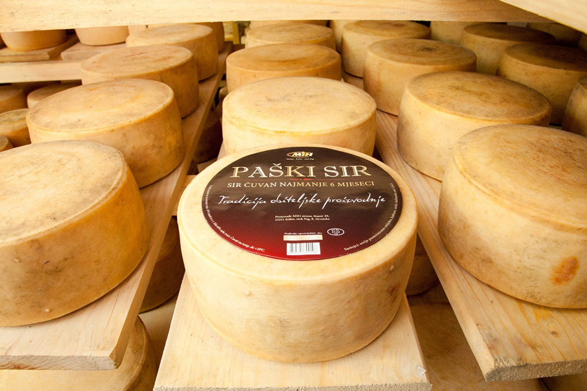
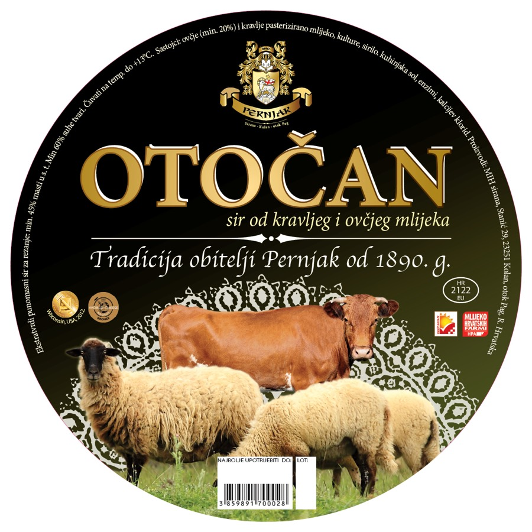
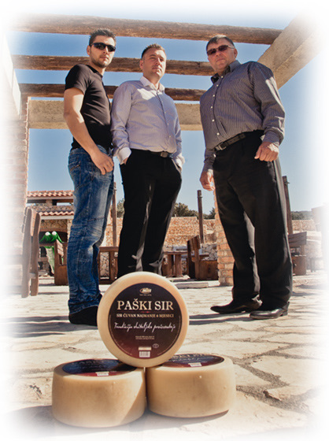
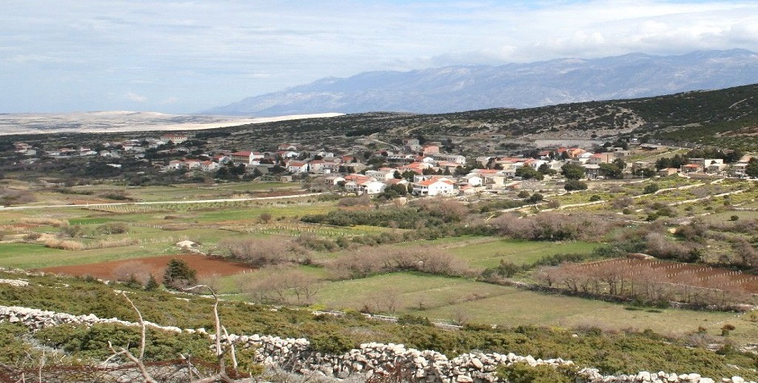
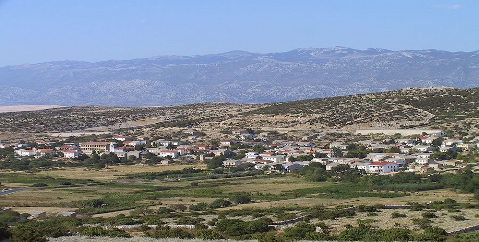
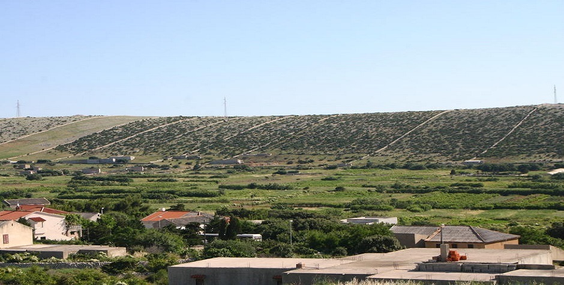

Ovčji · ZOI
Paški sir
Ekstra tvrdi, punomasni ovčji sir isključivo od mlijeka paške pramenke. Mramorne strukture, zlatno žute boje, s aromama kadulje i vriska.
Dozrijevanjemin. 60 dana
Obitelj Pernjak oduvijek je vezana uz otok, težački život i ljubav prema ovčarstvu. Paški sir radimo od mlijeka našeg matičnog stada autohtone paške pramenke, po recepturi koja se u obitelji prenosi od 1890. godine.

Uz Paški sir, naš najvažniji proizvod, radimo pašku skutu te sireve od kravljeg mlijeka i miješane sireve. Kravlje mlijeko otkupljujemo od kooperanata iz Dalmatinske zagore i Like.
Ekstra tvrdi, punomasni ovčji sir isključivo od mlijeka paške pramenke. Mramorne strukture, zlatno žute boje, s aromama kadulje i vriska.

Od sirutke Paškog sira. Ne stavljamo je u kalupe: svježa se ulijeva u gazu koja joj daje oblik „suze”, a cijedi se najmanje 24 sata.

Ekstra tvrdi miješani sir: paško ovčje mlijeko sljubljeno s punomasnim kravljim. Balans intenzivne arome paškog sira i glatkoće kravljeg.
Obitelj Pernjak oduvijek je poznata po Paškom siru, skuti i paškoj janjetini. Vlasnici sirane danas su Dubravko Pernjak i sinovi Šime i Marin.
„Garancija kvalitete naših sireva je nasljeđe obitelji Pernjak i obveza prema našim precima.”Vaša obitelj Pernjak

Prvi trag obiteljske proizvodnje sira. Tradicija koja je i tada bila garancija kvalitete, baš kao i danas.
Djed Ante i baka Tonica rade Paški sir u domaćinstvu i nude ga u svojoj konobi, prvoj u Kolanu i među prvima na otoku. Najviše ga kupuju gosti iz Italije, pa smo bili prvi izvoznici Paškog sira izvan tadašnjih granica države.
Dubravko Pernjak okreće se intenzivnom stočarstvu i povećava stado. Kao hrvatski branitelj u ratnim godinama nije mogao širiti posao.
Na temeljima obiteljskog gospodarstva Dubravko osniva MIH i oprema mini siranu za veće količine Paškog sira.
Po povratku sinova Šime i Marina sa školovanja gradi se novi objekt po europskim standardima, s modernim pogonom. Asortiman se širi na kravlje i miješane sireve.
Prvi na otoku uvodimo sustav strojne mužnje ovaca.
Zajedno sa svim kooperantima prolazimo kontrolu i certifikaciju bez nesukladnosti. Paški sir MIH sirane dobiva prvi certifikat za Paški sir (ZOI), izdan od Biotechnicona.

Bura s mora podiže kapljice vode i raznosi ih po otoku. Ta posolica povećava sol u tlu, pa na kamenjarskim pašnjacima raste nisko, aromatično i ljekovito bilje. Jedina domaća životinja koja može živjeti na takvim pašnjacima jest ovca.
Na pašnjacima otoka Paga utvrđena je 331 vrsta vaskularne flore. Dokument iz 1070. godine spominje selo Vlašići, čije ime dolazi od riječi Vlah, romanski stočar i pastir.
Izbor priznanja s popisa nagrada sirane. Paški sir, Otočan, Tartufin i Sveti Vid nagrađivani su na domaćim i međunarodnim ocjenjivanjima.
Šampion kvalitete i velika zlatna medalja – Paški sir
4. mjesto u kategoriji svjetskih ovčjih sireva – Paški sir
Šampion – Tartufin; zlatne medalje – Paški sir i Otočan
Zlatna medalja – Paški sir
Velike zlatne medalje – Paški sir i Tartufin
Šampion kvalitete; velike zlatne medalje – Paški sir i Sveti Vid
Na popisu su i brončane medalje WCA (2012. Otočan, 2013. Paški sir), srebro za Otočan na 10. Danima hrvatskih sireva (2015.) te HACCP certifikat iz 2009.
Krški pašnjaci čine 90 % poljoprivrednih površina otoka Paga. Krajem 18. stoljeća na Pagu se uzgajalo oko 25.000 ovaca.


Isključivo od ovčjeg mlijeka autohtone pasmine otoka Paga, paške pramenke. Mlijeko dolazi iz našeg matičnog stada, a kako ga nije dovoljno, surađujemo s brojnim domaćinstvima na otoku Pagu.
Najmanje 60 dana. Paški bokun, ekstra tvrdi ovčji sir, dozrijeva najmanje 180 dana.
Albuminski sir dobiven kuhanjem ovčje sirutke koja ostaje nakon proizvodnje Paškog sira. Svježu skutu ulijevamo u gazu koja joj daje oblik „suze”, a cijeđenje traje najmanje 24 sata. Rok trajanja je 7 dana.
Da. Kravlje mlijeko otkupljujemo od kooperanata iz Dalmatinske zagore i Like i od njega radimo Kolanjac, Sveti Vid, Tartufin, Mladi trapist, Škripavac i svježi slani sir. Otočan, Dalmatinski i Paško kolo su miješani sirevi.
Stanić 29, 23251 Kolan, na otoku Pagu. Nazovite nas na 023 698 011 ili pišite na info@siranamih.hr.
Za narudžbe, poklon pakete i suradnju nazovite nas ili pošaljite upit.